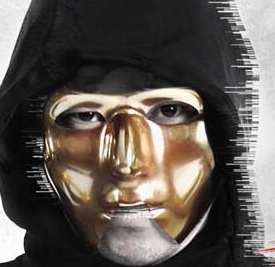

嘻哈侠到底是谁？
在各路参赛选手中，有相当多原先在地下说唱界的知名rapper，如jonyj、大狗、小青龙等等;但最吸引观众视线的一位选手，他的形象是这样的：

到底他为什么要戴面具？
不外乎如下三个原因：
节目噱头特意安排
本人意愿（逗自己的孩子开心）
名气太大

- 2001年，欧阳靖在美国街头及酒吧作花式饶舌（Freestyle）演出。
- 2002年，他在美国黑人娱乐电视台的每个星期五播出的音乐节目《106&Park》中，击败了连续六星期冠军Hassan，之后连续7个星期获得“Freestyle Friday”环节的冠军，登上该节目的名人榜。
- 2003年，欧阳靖签约于专门制作嘻哈音乐的拉夫·莱达斯娱乐公司，并发布第一只单曲《Learn Chinese》的MV。同年，欧阳靖参演电影《速度与激情2》，其歌曲《Peel Off》亦被收录在该电影的原声大碟。
- 2004年，欧阳靖推出首张专辑《The Rest Is History》，专辑登上了Billboard“200大专辑排行榜”第54位，成为第一位登上该美国唱片排行榜的亚裔美国人。同年欧阳靖亦成为第一位在美国音乐电视频道（MTV）的“Fight Klub Battle”环节中出场的华人饶舌歌手。
- 2005年，与台湾歌手王力宏合作灌录歌曲《盖世英雄》。<同年，灌录了一首名为《I Quit》的歌曲，令人以为他从此会结束他的音乐生涯。同年与另一间独立唱片公司格拉夫·普拉斯娱乐公司签约，于同年10月25日推出他第二张唱片《The Emcee's Properganda》。
- 2006年，欧阳靖推出了两张唱片，分别为《100 Grand Jin》及《I Promise》。同年4月24日，他推出了一首名为《Open Letter to Obama》的歌曲，令他登上了MySpace的“Barack Obama's Top 8 list”的第一位。
- 2007年，欧阳靖推出了一首歌曲《Rain，Rain Go Away》，以纪念美国维珍尼亚理工学院于2007年4月16日发生的校园枪击案。
- 2008年，他在香港发展，其歌曲《ABC》（American-BornChinese），并在2008年度叱吒乐坛流行榜颁奖典礼获得“专业推介·叱咤十大 第六位”。
- 2009年，欧阳靖推出了两张广东专辑《轩尼诗x欧阳靖免费Rap Mixtape 2009》及《维他圣诞Mixtape》，另外，他与郑融、关心妍及钟欣桐制作歌曲。同年，欧阳靖接受了“West Coast Pit”冠军Dizaster of GrindTime挑战，进行Rapping的比试。
- 2010年2月1日，欧阳靖与林盛斌及陈伟霆开始主持无线J2的《兄弟帮 BBC》节目。同年4月16日，欧阳靖开始主持无线电视的《劲歌金曲》节目。6月，欧阳靖参演的《打擂台》上映，其主题曲《Fight To Win》由欧阳靖主唱。7月13日，欧阳靖与陈奂仁推出合作新碟《买一送一》；同年9月5日，欧阳靖（MC Jin）担任音乐比赛嘉宾，以自己多年Rap的经验给参赛者的意见。
- 2010年12月，欧阳靖与行政长官曾荫权为庆祝圣诞在网上rap歌。
- 2011年欧阳靖加入主持界，为武术资讯节目《龙腾天下》及武术选秀节目《功夫新星》担任主持工作，但同时亦在《依家有喜》、《点解阿Sir系阿Sir》等剧集客串演出，8月欧阳靖在的警匪剧《潜行狙击》饰演刑事情报科卧底“立青”，被提名万千星辉颁奖典礼2011“我最喜爱的电视男角色”，并获得飞跃进步男演员奖；因饮食节目掀起热潮，欧阳靖亦担纲主持介绍香港食品的饮食节目《香港美食100强》。因欧阳靖表现出色，于万千星辉颁奖典礼2011，获颁“飞跃进步男艺员”奖项，由《打擂台》中饰演他师傅的泰迪罗宾颁奖。
- 2014年10月推出其个人专英文专辑《14:59》。
看完以上介绍，你被吓到了吗？
欧阳靖VS黑人
仅仅一段早年比赛的视频就足以说明全部，欧阳靖的rap实力，可以说是完全处于世界级水准的。他之所以来到《中国有嘻哈》这个节目参赛，据其本人所说是为了锻炼自己的中文水平（本身为美国华裔，母语是英语），而在这档节目中，单以rap经验和技巧而论，绝没有任何人是欧阳靖的对手！
网友戏称：欧阳靖参加中国有嘻哈，等同于陈奕迅参加快男、韩红参加快女。